BOO-GIE es una plataforma de descubrimiento musical diseñada para acercar a los usuarios a diferentes géneros, artistas y canciones icónicas. A través de recomendaciones y datos. Buscamos conectar a las personas con la cultura musical de distintas épocas.
Aquí no se trata solo de cantar una melodía pegajosa. Se trata de crear un groove, esa conexión entre los instrumentos que hace que tu cabeza se mueva sin que te des cuenta. Con bajos marcados, guitarras cortas y rítmicas, baterías precisas y metales explosivos, el Funk tiene una personalidad imposible de ignorar.
DISCO
Su sonido mezcla ritmos constantes, bajos bailables, cuerdas, voces poderosas y arreglos musicales llenos de energía. Cada canción parece estar diseñada para que la fiesta nunca termine. Pero el Disco fue mucho más que música. También fue moda, baile, cultura nocturna y una manera de expresarse sin miedo a destacar.
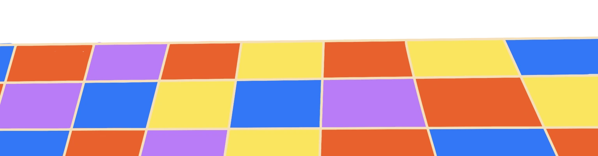
Más que música, una forma de vivir la pista de baile.
UN VIAJE EN EL TIEMPO
60´s
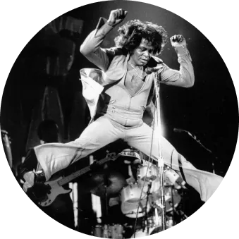
Nace el funk
A finales de los años 60, la música comenzó a tomar un nuevo rumbo...El soul, el jazz y el R&B dieron paso a un sonido más atrevido, artistas como James Brown y Sly and the Family Stone impulsaron el Funk, un género que rompió con las estructuras tradicionales y convirtió cada instrumento en parte de una conversación rítmica.
70´s
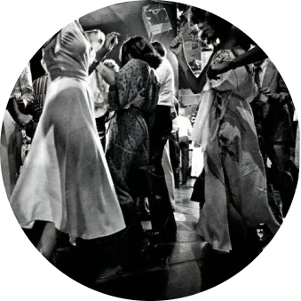
Explosión del disco
Durante los primeros años de la década, el Funk se convirtió en una explosión de creatividad con vestuarios extravagantes y presentaciones llenas de energía. Mientras tanto, en los clubes de Nueva York, comenzaba a crecer el Disco. Alimentado por el soul, el funk y los ritmos latinos, nació de comunidades que encontraban en el baile un espacio de libertad, inclusión y expresión.
70´s
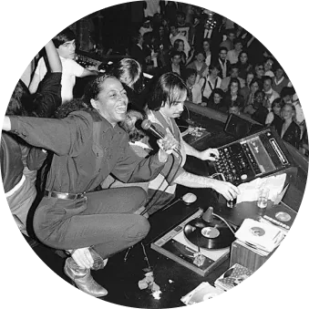
¡La fiebre Disco se apodera del mundo!
¡Las pistas de baile estaban más vivas que nunca! El Disco alcanzó una enorme popularidad, convirtiéndose en un fenómeno que mezclaba música, moda y cultura nocturna. Las luces, las bolas de espejos y los pantalones acampanados se volvieron símbolos de toda una época.
80´s
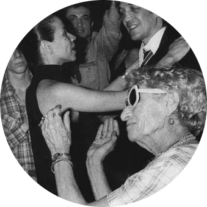
El ritmo cambia de forma, pero no de esencia
Con la llegada de los años 80, el Disco perdió presencia en las listas de éxitos, pero su legado siguió creciendo. Este evolucionó, los sintetizadores y las cajas de ritmos comenzaron a transformar el sonido de las pistas de baile.
90's y 2000's
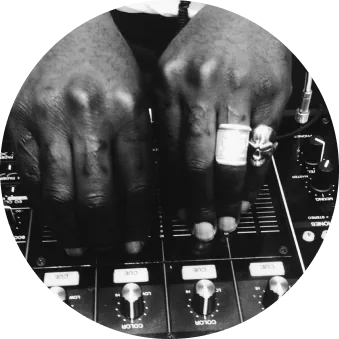
El pasado se mezcla con el futuro
Los sonidos clásicos regresaron con una nueva personalidad. El hip-hop utilizó samples de canciones Funk, recuperando sus bajos y ritmos para crear nuevos éxitos.
EL RITMO NUNCA MURIO, SOLO ENCONTRÓ NUEVAS FORMAS DE BRILLAR.
ARTISTAS LEGENDARIOS
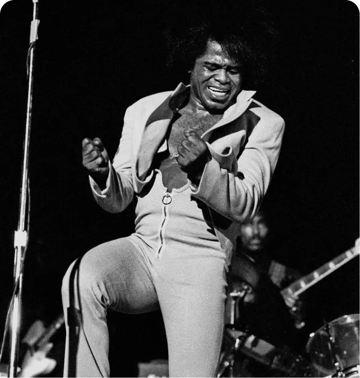
James Brown
1933–2006 · Estados Unidos
Ayudó a definir el sonido del Funk con ritmos sincopados y un poderoso énfasis en el primer tiempo del compás.
El padrino del Funk
Cantante, compositor y uno de los grandes revolucionarios de la música. James Brown transformó el soul al darle mayor protagonismo al ritmo, creando las bases de lo que hoy conocemos como Funk. Sus canciones, llenas de energía y movimientos explosivos, inspiraron a generaciones de músicos.
Donna Summer
1948–2012 · Estados Unidos
Junto con el productor Giorgio Moroder, ayudó a transformar la música de baile con I Feel Love, una canción pionera del disco electrónico.
La reina del Disco
Donna Summer fue una de las voces más importantes de la era disco. Su estilo combinaba interpretaciones poderosas, melodías irresistibles y sonidos electrónicos que parecían adelantados a su época.
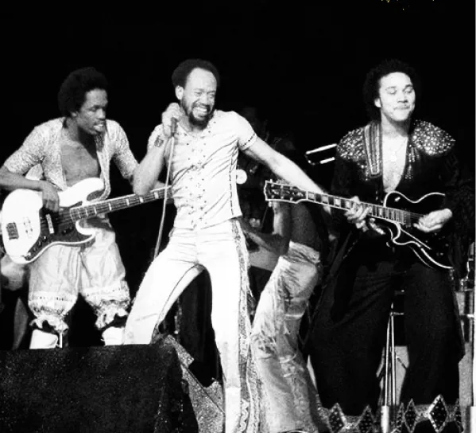
Earth, Wind & Fire
Formados en 1969 · Estados Unidos
Llevaron el Funk a un público internacional con un sonido sofisticado, positivo y extremadamente bailable.
Los maestros del groove
Fundada por Maurice White, esta banda combinó Funk, soul, jazz y elementos de la música disco para crear canciones llenas de alegría. Sus armonías vocales, secciones de viento y ritmos contagiosos los convirtieron en uno de los grupos más queridos de los 70.
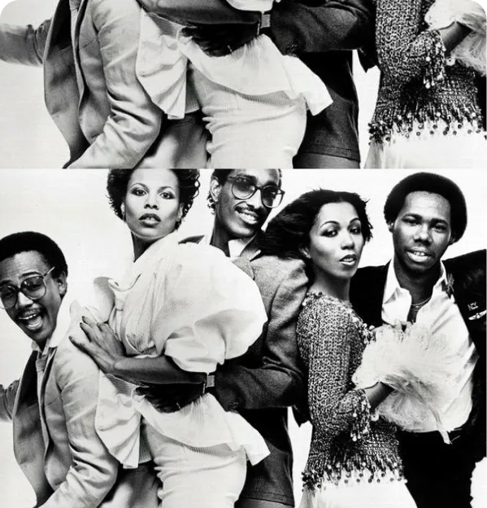
Chic
Formados en 1976 · Estados Unidos
Perfeccionaron un estilo de disco-funk que influyó en la música dance, el hip-hop y el pop, especialmente gracias a canciones como Good Times.
Elegancia con mucho groove
Fundada por Nile Rodgers y Bernard Edwards, Chic logró una mezcla irresistible de Funk y Disco. Sus líneas de bajo, guitarras rítmicas y melodías elegantes marcaron una época.
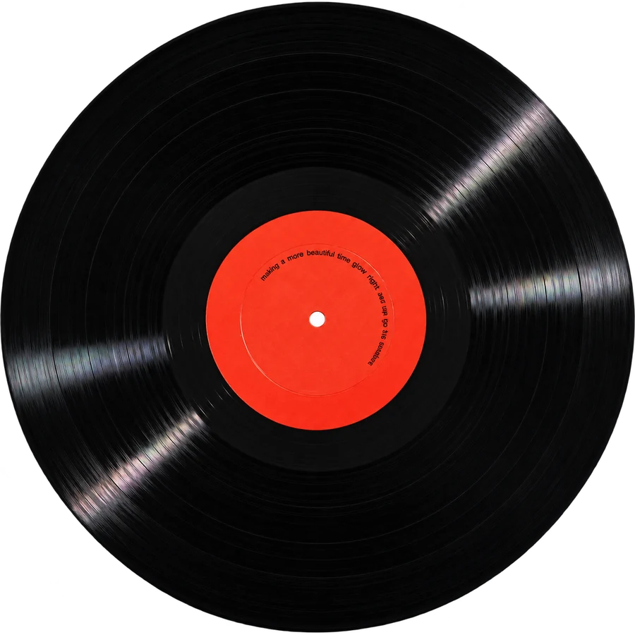
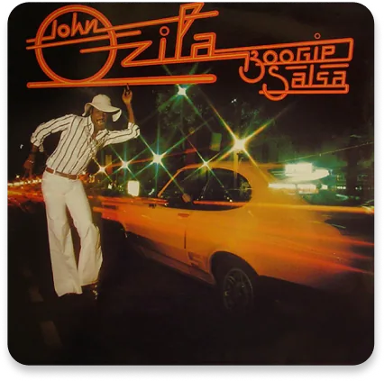
Funky boggie
John Ozila
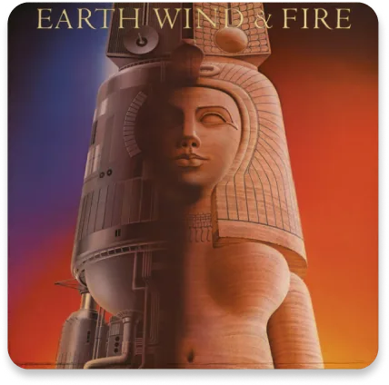
Let´s groove
Earth, Wind & Fire
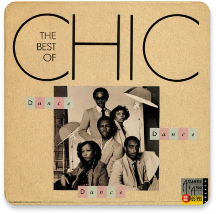
Soup for One
CHIC
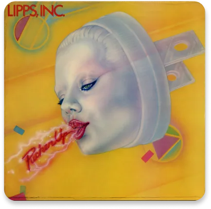
How Long
Lipps Inc.
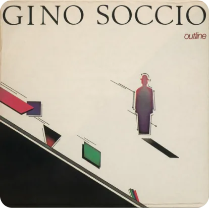
Dance to Dance
Gino Soccio
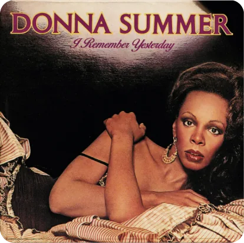
I Feel Love
Donna Summer
DALE PLAY AL GROOVE
Presiona play para escuchar un fragmento de la siguiente canción. Toca la portada para pausar.